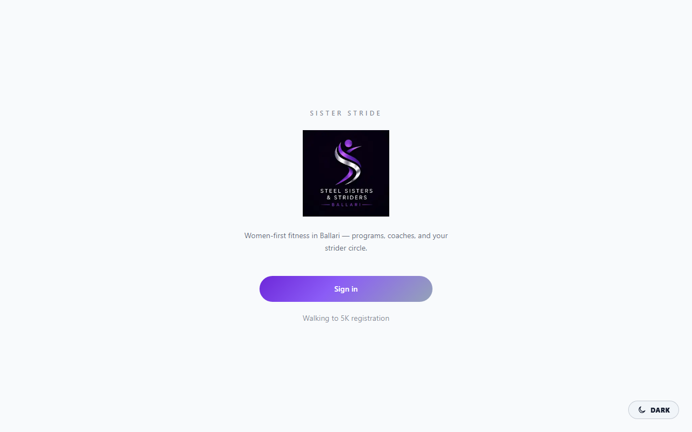
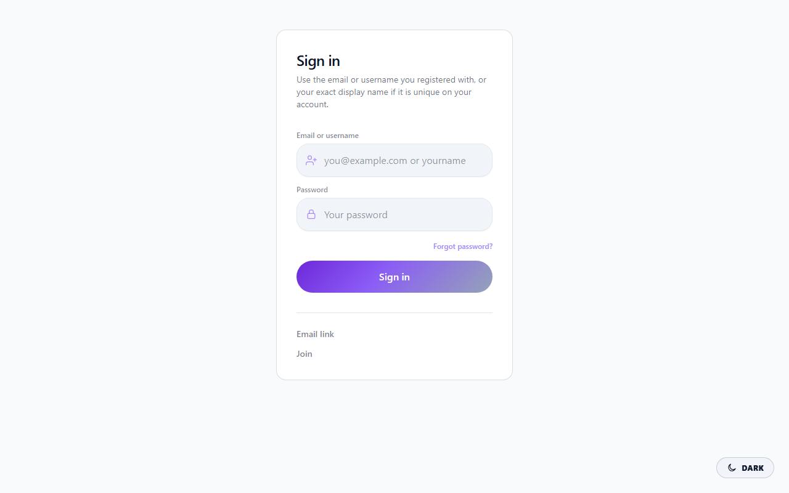
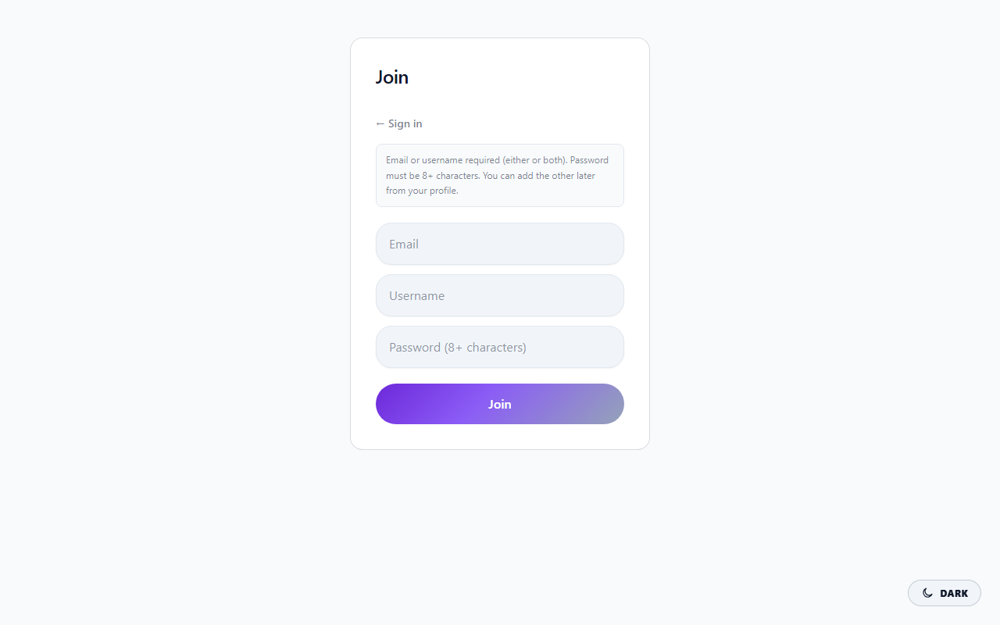
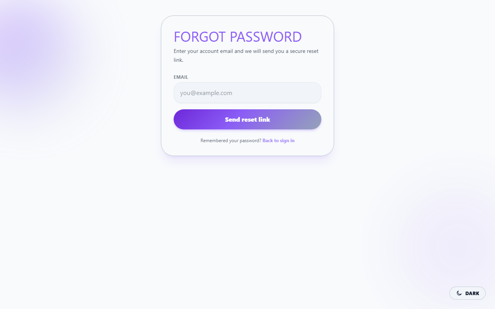
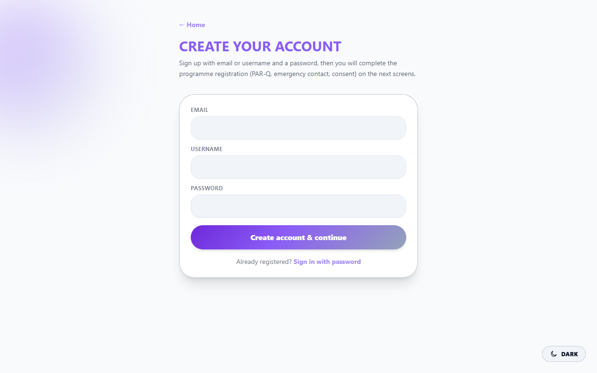

npm run docs:demo-screenshots).
Member-area shots (10–18) require E2E_PASSWORD_EMAIL + E2E_PASSWORD and a seeded onboarded user — see DEMO_DOC_PDF.md.
Then run npm run docs:demo-doc-pdf to refresh Sister-Stride-Product-Demo.pdf.
Women-first fitness in Ballari · Product walkthrough with live UI captures
This handout follows the same journeys our Playwright end-to-end suite exercises: visitors see sign-in and registration; members see home, score, progress, challenges, events, Couch to 5K, coaches, community, and the self-help guide.
Public landing — brand, positioning, and entry to sign in or programme registration.

Returning members use the sign-in screen (password path shown; your deployment may also use WhatsApp OTP where enabled).

New accounts can register from the Join tab on the same page.

Forgot-password flow for members who need a reset link.

Guided registration for the 12-week Walking to 5K programme.

After sign-in, the dashboard surfaces next steps, programmes, and navigation to the rest of the app.
Holistic score view and optional recompute for motivated members.

Logging and charts for habits the club cares about.

Friendly group challenges and leaderboards.

Club calendar — browse, register, and attend sessions.

In-app structured running/walking programme with purchase path where configured.

Discover coaches and book support.

Strider circle — posts, wellness, and safety tools.

Common questions and guidance without leaving the app.